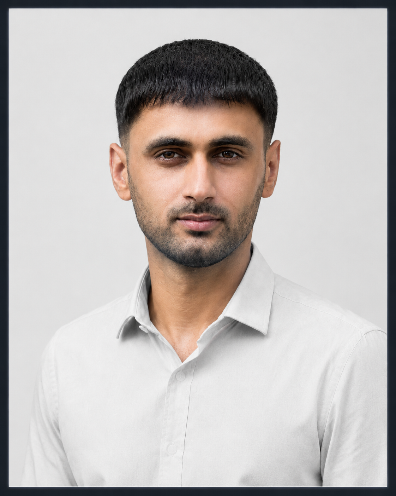
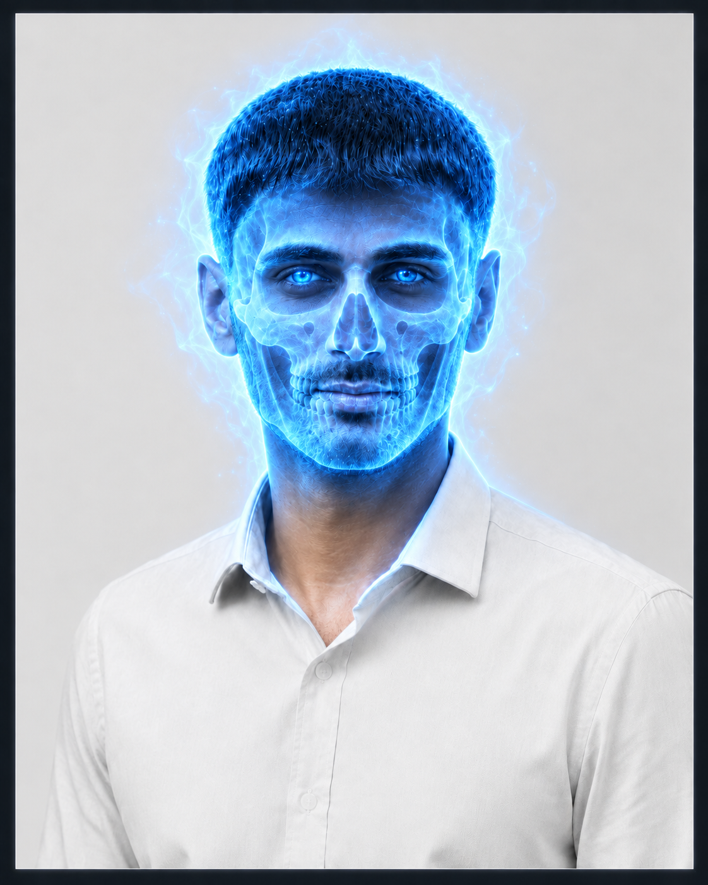

Machine Learning
Predictive modelling, deep-learning pipelines and evaluation workflows for real-world classification, vision and decision-support problems.
This is Hasnain Haider.
“The limits of the possible can only be defined by going beyond them into the impossible.”
Computer Science researcher building practical AI across machine learning, agentic systems, computer vision, retrieval-augmented generation and trustworthy AI — with a focus on rigorous evaluation, deployment and real-world usefulness.


I'm Hasnain Haider, a Computer Science researcher and fully funded international scholar. I take ideas from careful evaluation to working systems people can actually use.
Explore selected workMy work connects applied machine learning, agentic AI and computer vision with the practical questions of explainability, robustness, latency and deployment.
Applied AI, analytics and product engineering capabilities shaped around measurable systems, clean deployment and research-grade evaluation.
Predictive modelling, deep-learning pipelines and evaluation workflows for real-world classification, vision and decision-support problems.
Modern web applications, APIs and dashboards using React, Node.js, Django, Flask and deployment-ready engineering patterns.
Turning messy datasets into clear metrics, visual stories, KPI dashboards and decision-ready insight with statistical discipline.
RAG, agentic workflows, tool-calling systems and automation prototypes designed around safety, usefulness and measurable outputs.
Not a wall of cards. Each project is treated as a small system: problem, signal, model, deployment and measurable outcome. The mini-visualizations now behave like live product telemetry rather than decorative illustrations.
Serverless on-device cataract screening, built around a MobileNetV2 pipeline for real-world mobile deployment.
A reproducible local RAG benchmark that asks how far retrieval + generation can go on a 16 GB CPU-only laptop.
Audits fraud models for leakage, time drift, calibration, SHAP stability and alert capacity.
An agentic AI employee-risk system with six connected operators, orchestrated from signal validation to safe human follow-up.
An ongoing memorization-resistant fetal ultrasound plane recognition study testing whether lightweight models learn fetal anatomy instead of scanner, hospital or country-specific shortcuts.
Smaller projects that helped sharpen practical ML, CV, analytics and end-to-end implementation skills.
TF-IDF + Naive Bayes text classification pipeline.
98% accuracy ↗ 07 / VisionMobileNet transfer learning across a 38-class plant disease dataset.
93% accuracy ↗ 08 / Predictive MLTensorFlow and Scikit-Learn workflow for churn prediction.
85% accuracy ↗ 09 / OpenCVReal-time face recognition with OpenCV and SQLite.
Real-time CV ↗Decentralized peer-to-peer mesh communication system presented at Asia Tech x Singapore.
ATx SingaporeOperational analytics and executive KPI dashboard work during the Maybank Global Ambassador role.
MaybankMethodology, reproducibility, explainability, latency and statistical evidence are treated as first-class engineering constraints.
Evaluates LR, RF, XGBoost, LightGBM and MLP across three transaction datasets and five fixed seeds, with validation-selected MCC thresholds, untouched test partitions and six registered operational audits.
Five-architecture benchmark leading to MobileNetV2 selection and a serverless Flutter deployment for on-device screening.
Dense retrieval and compact generation benchmarked on 500 SQuAD validation questions with a matched no-RAG baseline.
Proposed cross-country study using FETAL_PLANES_DB, African fetal ultrasound planes and FL-Fetal to evaluate patient-level splitting, duplicate control, style augmentation, domain confusion and uncertainty-aware rejection.
From university research and teaching support to independent projects, analytics work and applied AI systems.
Supporting research at the intersection of machine learning, agentic AI, interpretability, experimental design and validation.
Assisted with practical sessions for the Cryptography course taught by Prof. Dr. T. S. Khalid Hussian.
Developed a leakage-conscious audit protocol comparing five fraud-classifier families across three transaction datasets, 75 frozen dataset-model-seed units and six operational robustness axes.
Collaborated with a PhD scholar at Deakin University, Australia, on mobile cataract screening, from model benchmarking to Flutter on-device deployment.
Built Day90 Guardian, an AI employee system with six connected operators and safe human follow-up workflows.
LinkPresented P2PMesh at Asia's technology summit and participated in global technology discussions and competitions.
LinkAnalysed operational and digital-transformation datasets and developed KPI dashboards for executive decision-making.
Implemented classification and regression pipelines, automated cleaning and created exploratory visualisations with Python.
A practical research-to-production stack arranged by responsibility: modelling, interfaces, services, data, core technologies and deployment discipline.
Six connected layers for research, product building, evaluation and deployment.
A computer science foundation, research-led practice and credentials earned along the way.
Research collaboration, applied ML systems, agentic workflows, RAG experiments or computer-vision deployment — I am interested in useful problems with clear constraints and measurable outcomes.